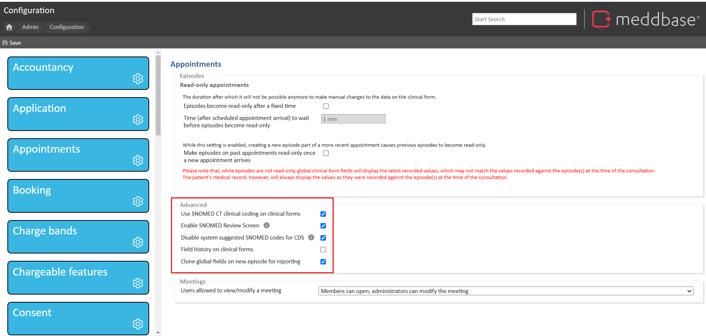
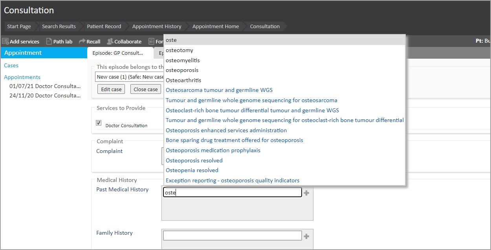
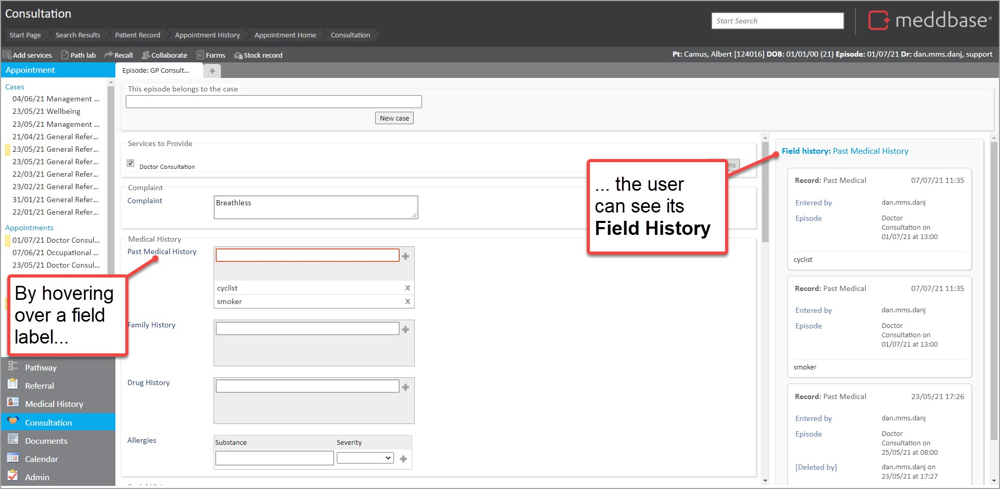
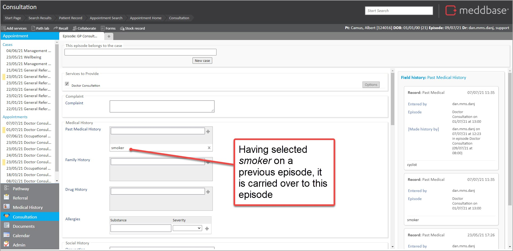

There are advanced settings in Meddbase that affect Clinical form behaviour and enable additional features.
This article will walk you through the process of enabling Advanced Clinical form options and outlines the effects on the behaviour of a Clinical Form.
To access the Advanced Clinical form options, the following process applies:
1. From the Start Page navigate to Admin Configuration Appointment
2. In the Advanced section, consider the options explained below
3. Tick check-boxes for settings to be activated

4. Click Save
The Advanced Clinical form settings are updated according to the selections you have made.
Below are explanations for the different Advanced Clinical Form settings and what they mean for users.
SNOMED CT is a structured clinical vocabulary for use in an electronic health record. It is the most comprehensive and precise clinical health terminology product in the world. The primary purpose of SNOMED CT is to encode the meanings that are used in health information and to support the effective clinical recording of data to improve patient care.
Having activated SNOMED CT, when typing data into a field, you will notice a pop-up window with suggestions of words and phrases based on what you are typing. There are 2 types of suggestions you may see:
For more information on SNOMED CT use in Clinical Forms, please refer to our article on Working with SNOMED CT terms in Meddbase.

By enabling SNOMED Review Screen, it enables users to navigate to and view the SNOMED Review Screen from a Patient's Medical History or Within a Consultation.
By enabling Disable System Suggested SNOMED codes for CDS, it disables System Suggested SNOMED codes for Clinical Decision Support when Prescribing. This means, only confirmed SNOMED codes are used for Clinical Decision Support when Prescribing.
By enabling Field history on clinical forms it enables the user to view the history of entries in a particular field.

By enabling Clone global fields on a new episode for reporting, a value captured in a 'Global' field is carried over from episode to episode. For example, if the patient has Smoker value selected, it'll remain selected on future episodes until changed.

If you need to audit the values for that field for every episode in a report, this feature needs to be switched on, so that active values get brought forward at the start of every episode or when an appointment is marked as arrived.
Otherwise, if this feature were disabled, the report would only consider episodes where the value had changed in a global field.